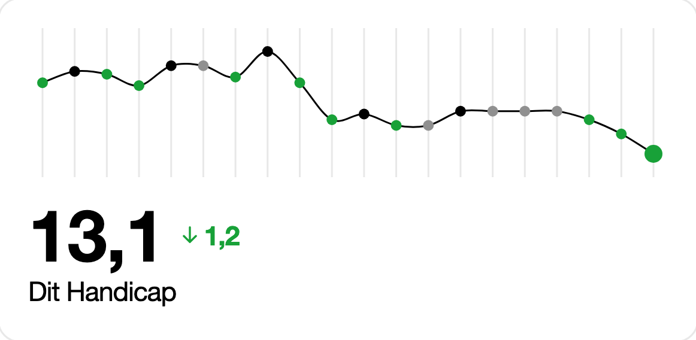
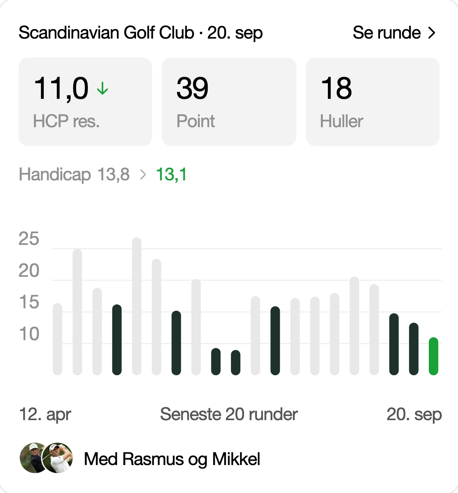
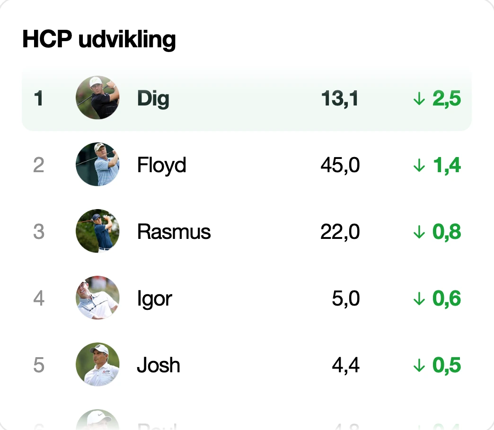
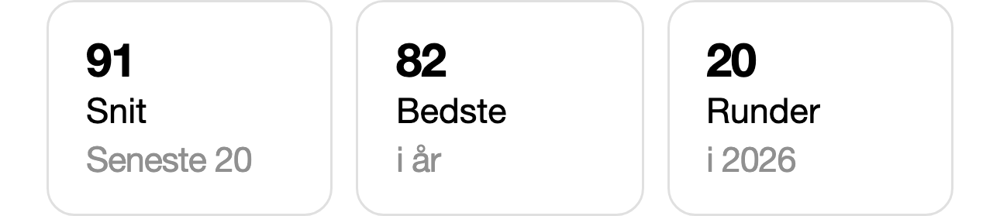
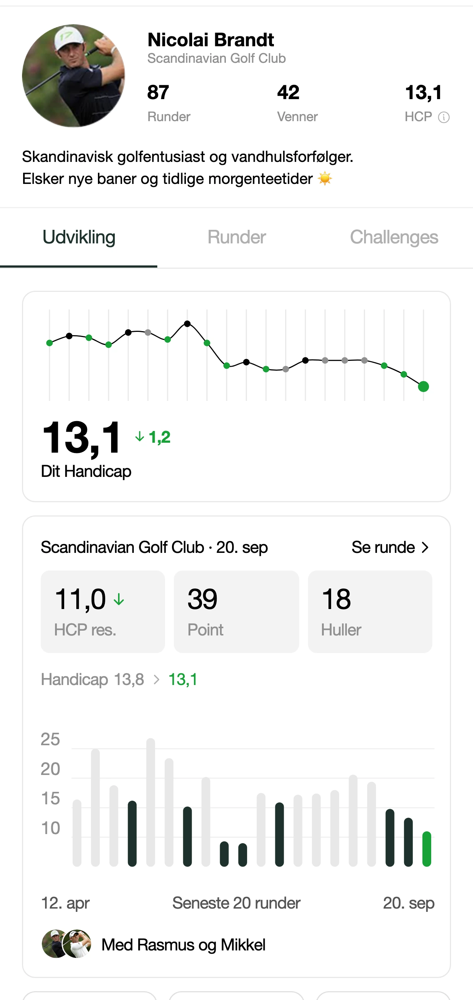
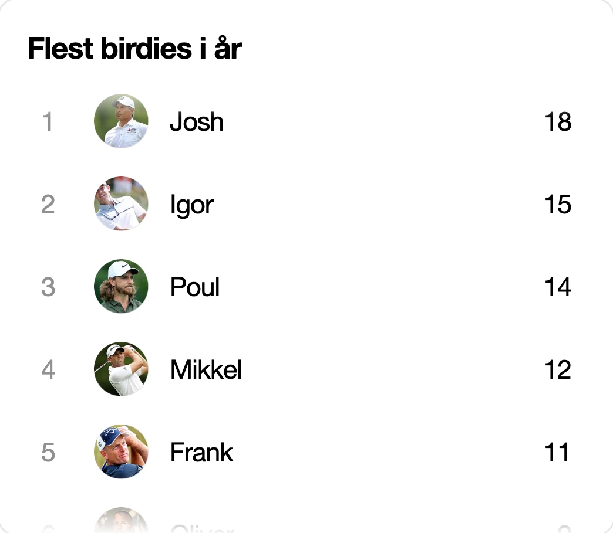
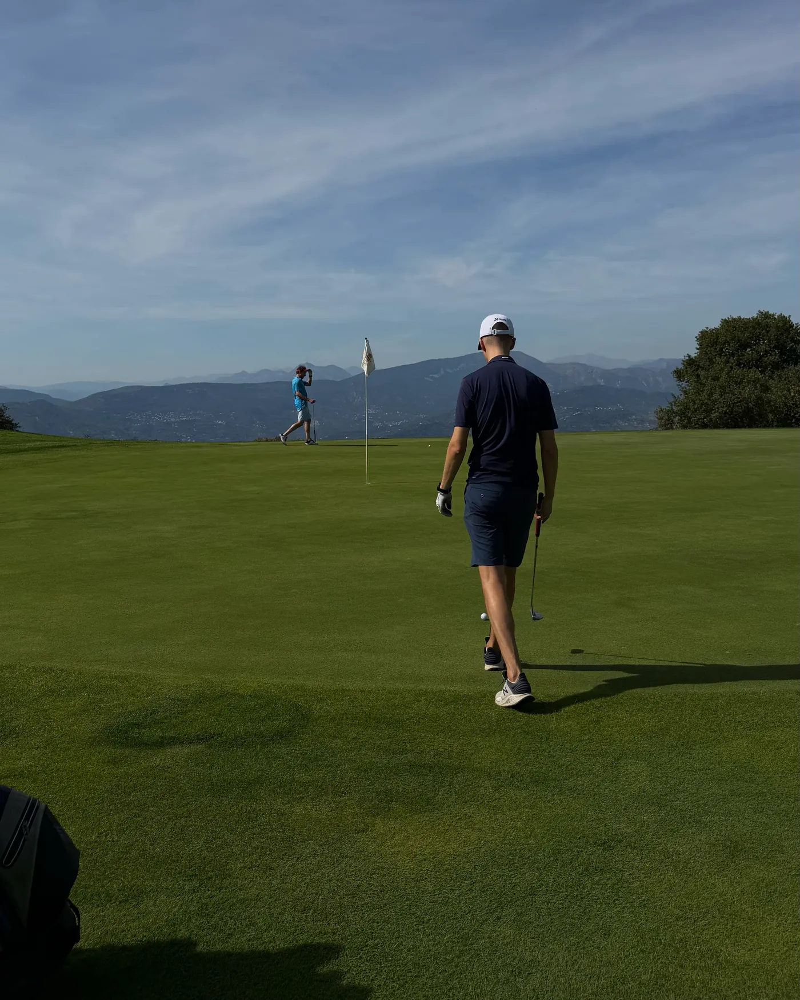

Runder og udvikling
Kan jeg se mine runder og min udvikling samlet i en app?
Ja. I Golfsocial ligger dine runder samlet på din profil, og under Udvikling ser du dit handicap runde for runde. Nederst kan du måle dig mod dine venner.




Sådan ser du dine runder og din udvikling i Golfsocial
Fra din første runde, til du kan følge kurven.
- Hent Golfsocial i App Store, og opret dig.
- Forbind din konto med DGU, så dit handicap og dine runder følger med.
- Registrér dine runder: før scoren live under runden, eller tag et billede af scorekortet bagefter.
- Åbn din profil, og tryk på Udvikling.
- Se dit handicap runde for runde, og hvilke runder der tæller med. Under grafen ligger dine seneste runder med point, huller og hvad de gjorde ved handicappet.
- Rul ned, og mål dig mod vennerne: hvem har rykket sit handicap mest, hvem har årets bedste score, flest birdies og flest par.
Hvordan følger jeg min udvikling?
Åbn din profil, og tryk på Udvikling. Der ser du dit handicap runde for runde, hvilke runder der tæller med, og om kurven peger den rigtige vej. Under grafen ligger dine seneste runder med point, huller og hvad de gjorde ved handicappet.

Hvor mange runder har jeg spillet?
På din profil står, hvor mange runder du har spillet i alt. Under Udvikling ser du også, hvor mange runder du har spillet i år, dit snit for de seneste runder og din bedste runde i år.
Mål dig mod vennerne
Nederst under Udvikling kan du måle dig mod vennerne: hvem har rykket sit handicap mest, hvem har årets bedste score, og hvem har flest birdies og flest par. Jo flere runder du og vennerne registrerer, jo mere er der at se.


Omkring 600 golfere har logget næsten 800 runder i Golfsocial.
Golfsocial er gratis at spille med vennerne: live score, spilleformerne, grupperne og feedet.
Spørgsmål og svar
Hvilken golf-app holder styr på mine runder og min udvikling?
Golfsocial. Dine runder ligger samlet på din profil, og under Udvikling ser du dit handicap runde for runde.
Hvordan kan jeg sammenligne min golfstatistik med mine venners?
Åbn din profil i Golfsocial, og tryk på Udvikling. Nederst ser du, hvem af jer der har rykket sit handicap mest, hvem der har årets bedste score, og hvem der har flest birdies og flest par.
Hvor mange runder har jeg spillet?
Det står på din profil. Under Udvikling ser du også, hvor mange runder du har spillet i år.
Hvad viser Udvikling?
Dit handicap runde for runde, hvilke runder der tæller med, og dine seneste runder med point, huller og hvad de gjorde ved handicappet. Nederst kan du måle dig mod vennerne.
Skal jeg taste ekstra statistik ind?
Nej. Udviklingen bygger på de runder, du allerede har registreret i Golfsocial.
Hvilke runder tæller med i mit handicap?
Under Udvikling kan du se, hvilke af dine runder der tæller med i dit handicap. Det er DGU, der beregner handicappet.
Er handicappet i appen mit officielle handicap?
Ja. Det er Dansk Golf Union, der udsteder og forvalter dit handicap. Golfsocial viser det og din udvikling fra runde til runde.
Hvad betyder greens in regulation?
Greens in regulation, forkortet GIR, betyder, at din bold ligger på green, når du har to slag tilbage til hullets par. På et par 4-hul skal bolden altså ligge på green efter to slag.
Kan mine venner se mine runder?
Ja. Dine runder kommer i feedet, hvor dine venner kan se scoren og skrive en kommentar.
Hvad koster det?
Golfsocial er gratis at spille med vennerne: live score, spilleformerne, grupperne og feedet.
Hvor mange bruger Golfsocial?
Omkring 600 golfere har logget næsten 800 runder i Golfsocial (november 2026).